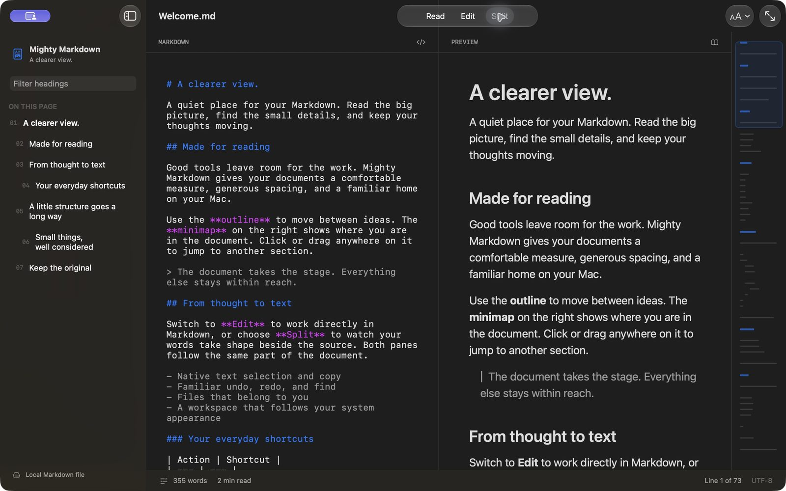

Markdown, at home on Mac
A clearer view. A little more focus.
Read, write and find your way through Markdown. A native workspace for the files you already own.

Split: source and preview side by side. Both panes follow the same part of your document.
Less between you and the document.
Familiar Mac controls, thoughtful ways to move through a page, and room for the work itself.
Three ways to work
Read comfortably, edit your Markdown, or keep source and preview together in Split mode.
Find the next thought
Filter the heading outline to jump to a section. It works with repeated headings too.
A minimap for long files
See where you are in the document. Click or drag anywhere on it to move.
Room for reading
Choose prose and code fonts, adjust text size and reading width, or turn on focus mode.
A familiar Mac
Native windows, undo, redo, find, multiple windows, and system light and dark appearances.
Panes that stay together
In Split mode, scrolling follows source lines and document blocks, so both sides show the same passage.
Markdown in, document out.
The everyday syntax renders as a calm, readable page, with highlighting for code in recognized languages.
## Made for reading Use the **outline** to move between ideas. The **minimap** shows where you are. > The document takes the stage. ### Small things - [x] Open a file from Finder - [x] Choose a reading width - [ ] Turn on focus mode ⇧⌘F
Made for reading
Use the outline to move between ideas. The minimap shows where you are.
The document takes the stage.
Small things
- Open a file from Finder
- Choose a reading width
- Turn on focus mode
Supported
Headings, emphasis, lists, task lists, quotes, links, tables and fenced code blocks with language labels. UTF-8 documents, with the original line endings kept on save.
Not yet
Math, Mermaid diagrams, footnotes and PDF export. Images show their alternative text, and HTML appears as text.
Your everyday shortcuts.
The keys you already know from the Mac, plus a few for moving between modes.
Files, not a platform.
Your documents stay ordinary Markdown files. Open them, edit them, and save them where you choose. No account, server, database, analytics or advertising.
Read the privacy policyA native space for your next draft.
Mighty Markdown is available on the Mac App Store worldwide.
- System macOS 26 or later
- Mac Apple silicon and Intel
- Documents UTF-8 Markdown
- Account none needed